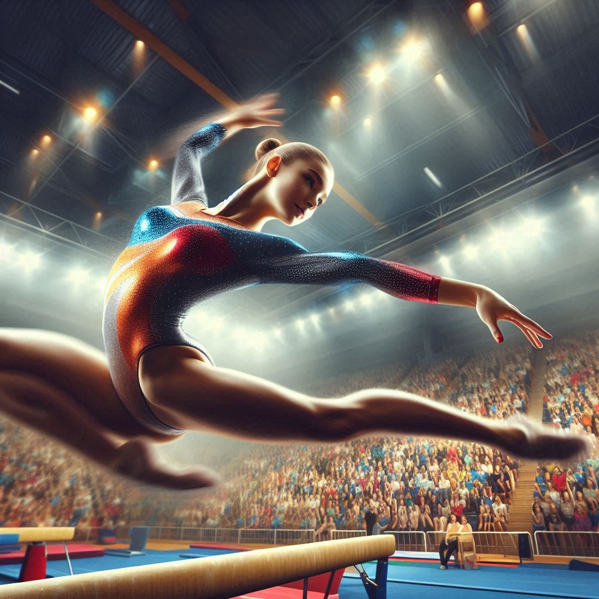

Bienvenue
La gymnastique artistique est une discipline sportive qui combine force, souplesse, équilibre et coordination. Elle se pratique sur différents agrès comme le sol, les barres asymétriques, la poutre et le saut pour les filles, et le sol, les anneaux, la barre fixe, les barres parallèles, le cheval d'arçons et le saut pour les garçons. Les gymnastes réalisent des enchaînements de mouvements acrobatiques, de figures et de poses, souvent accompagnés de musique. C’est un sport qui demande beaucoup d’entraînement et de technique.
